LLMs are bad and dangerous for learning how to code in this class
In the first week of class, I had you read an article about how ChatGPT is philosophical “bullshit”, as well as this other post about AI and LLMs in this class.
In the past couple semesters, I’ve seen a surprising increase in the amount of ChatGPT-based weekly check-ins and graph interpretations in the exercises. (In the past, I’ve even had students tell me they put PDFs of the slides into ChatGPT to generate interesting and confusing things.) Don’t do this! LLMs cannot find three things that you personally found interesting from the readings. LLMs are not you.
It’s a huge waste of time for all of us for me to spend time evaluating and grading output from ChatGPT. I want to read what you think and do, not what a computer invents.
Many of you have asked about how I think about and use LLMs in my own work (and in the class materials). Please check this short little page where I explain what I do with text, images, code, research, and learning.
In short, I do not use LLMs to create any of the materials for this class, and I do not use them to grade or evaluate any of your work.
LLMs are only useful if you know what you’re doing already
As I mention in that post, LLMs are great resources for coding when you already know what you are doing. If you don’t know what you’re doing, they’re actually really, really, really detrimental to learning.
The main theme of this class is that you can use graphs to represent the truth of data, but there’s been an alarming increase in completely fake data in many assignments.
ChatGPT is advanced enough that you can upload one the plots that you have to recreate for an exercise and have it generate working R code to recreate it—or something close to it.
Magical, I guess?
But also awful. First, you’re not learning anything, and second, the only way it can do that with the datasets I’m giving you is by creating fake data.
This is tricky because making synthetic data is good practice for humans to do. In week 8 you will learn about reprexes and how you should simplify complex plots down into minimal working examples to ask for help. This often involves either making a fake little toy dataset or using one of the built-in ones like mpg or penguins so that other people can run the code on their computer without needing to download and load and clean your specific data. After getting help and figuring out what’s wrong, it’s then your job to adapt the fix to your specific issue.
ChatGPT is doing kind of the same thing. It doesn’t know what your data looks like, so it makes up an example dataset. For instance, if you ask it to make a histogram of inflation-adjusted, per child spending on K-12 education in 2010 (which you’ll do in exercise 8), it might give you something like this:
library(tidyverse)
set.seed(42)
kids_k12 <- tibble(
inf_adj_perchild = rnorm(1000, mean = 1000, sd = 800),
region = sample(
c("West", "Midwest", "South", "Northeast"),
1000,
replace = TRUE
)
)
ggplot(kids_k12, aes(x = inf_adj_perchild, fill = region)) +
geom_histogram(binwidth = 1000, color = "white") +
facet_wrap(vars(region))↑ That’s good practice for a reproducible example. That creates a column called inf_adj_perchild with 1000 numbers in it with an average of $1000 and a standard deviation of $800, and it creates a column called region that randomly chooses one of those four regions. It even makes a histogram. Run it in R and it’ll work. Go ahead! Try it!
But none of that is real. Literally nothing.
Remember the definition of philosophical bullshit: it’s “speech or text produced without concern for its truth.” LLMs don’t care whether the text or code or data they generate are true—they only care about whether it looks plausible.
For the past couple semesters, as ChatGPT has become (seemingly) more powerful, I’ve had more and more students regularly paste its code output directly in their assignments, likely because they think it’s real, since RStudio actually does run the code successfully.
I’ve even had several students submit completely made up stuff for mini projects and final projects. In your final project, your job is to take a dataset, make three different plots with it, and combine the plots into one graphic that tells some sort of story. I’ve (really truly) received projects like this:
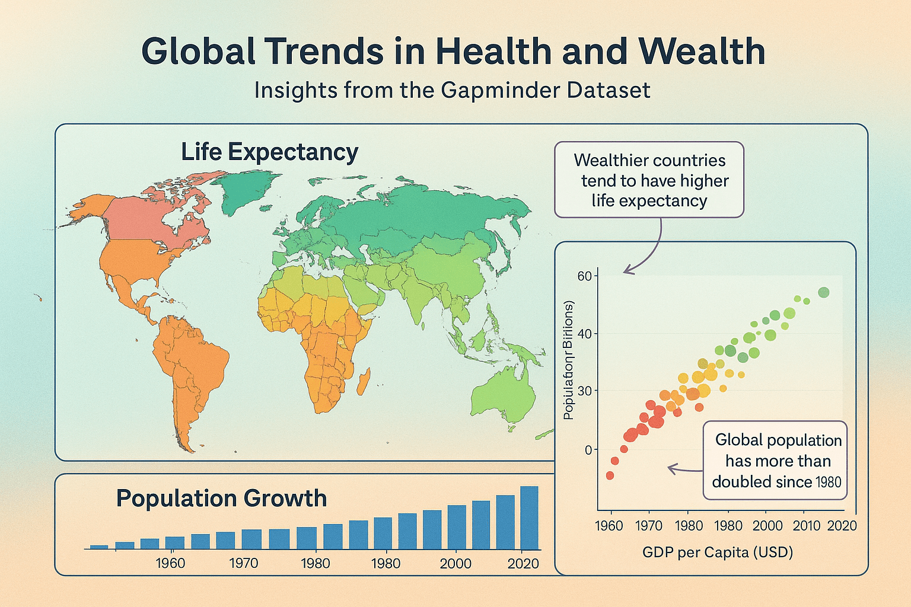
I created that image by going to ChatGPT and typing this:
Generate an infographic based on the gapminder dataset from R that has three plot types—a map, a scatterplot, and a bar chart. Give it some sort of title and short description in the subtitle, and a caption and use a good color scheme and make the background of the image fancy with a subtle gradient. Add some arrows and text boxes to annotate interesting things. Make sure each subplot has an informative title.
At a very quick glance, that looks like a plausible image. But holy crap it falls apart fast, both comically and tragically. Comically because, like, look at the y-axis in the scatterplot; or the x-axis ticks in the population growth chart that are sometimes spaced every 20 years, sometimes every 10 years, and has 1980 there twice; or the weird blobs in the map.
Tragically—and most importantly—literally nothing in this image is real and none of the annotations make sense and none of the colors make sense and everything here is completely meaningless and devoid of any information. It’s pure philosophical bullshit—an image “produced without concern for its truth.”
(Again, I’m not even kidding that I’ve received projects exactly like this, or projects that create and use completely make up random data. This is increasingly common!)
Possible ways to use LLMs to help with learning, kind of
If you do want to use an LLM to help with coding, one relatively okay way is to treat it as forgetful and sorta unreliable interactive documentation. Ask what different lines of code are doing and why things work the way they do.
If you ever see arguments and options that you don’t understand, you can ask about them. Don’t just include mystery arguments and functions in your code—make sure you know what each thing is doing.
Here are some examples of what that process looks like—two where the LLM is helpful, and one where it is subtly misleading and forgetful and unreliable.
Easy helpful one first. I asked this:
I’m using geom_label() and I saw an example online that had an argument with
hjust = 0. What does that do?
And it gave an explanation and an example and a bonus tip about nudge_x:
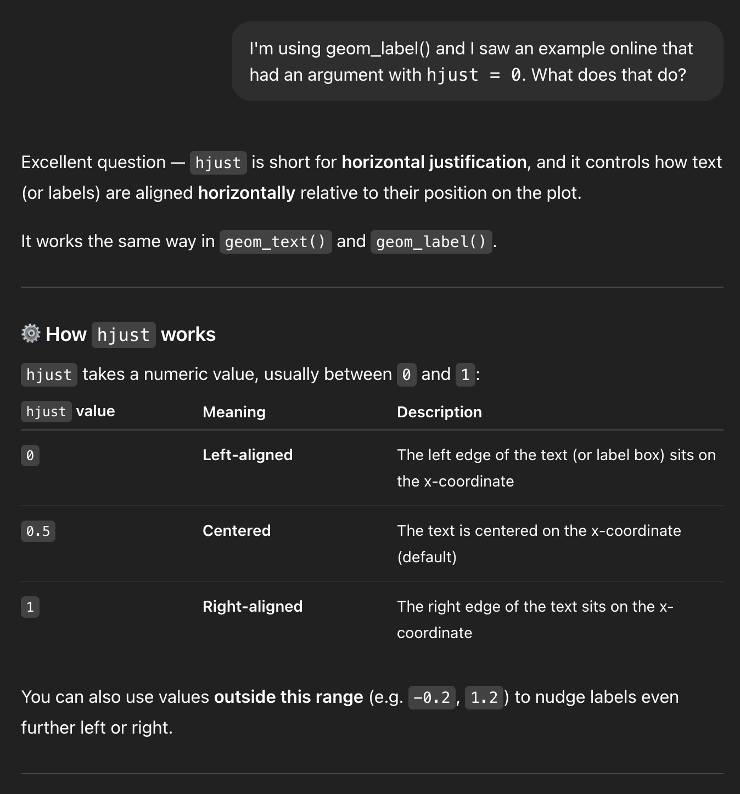
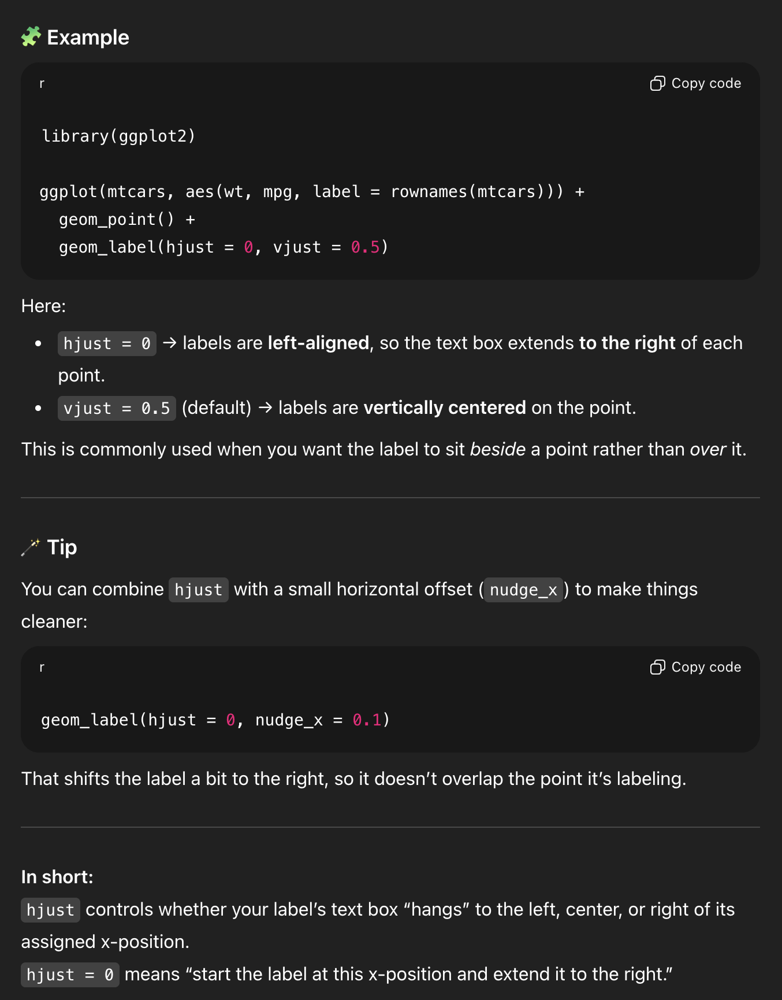
That’s neat! (But also you could’ve found the same information by running ?geom_label and looking at the help page)
Another easy helpful one. I asked this:
I have a ggplot plot and I want all the points to be blue, but when I used this with geom_point, all the points were red
```
geom_point(aes(color = “blue”))
```
And it gave an explanation and an example and a helpful rule of thumb and a bonus reminder about color vs. fill:
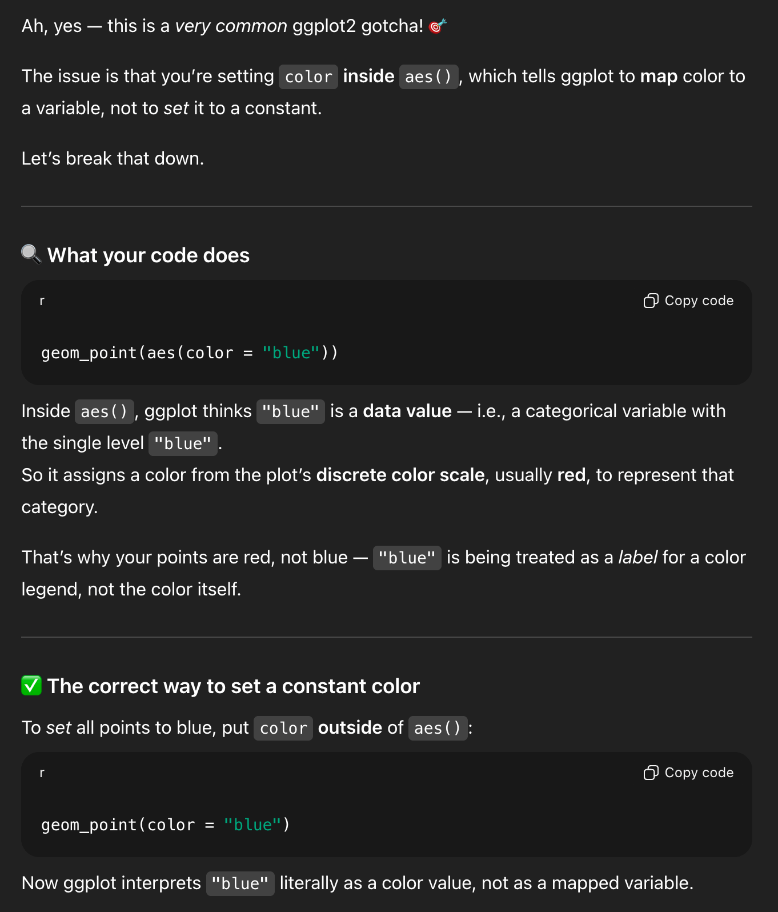
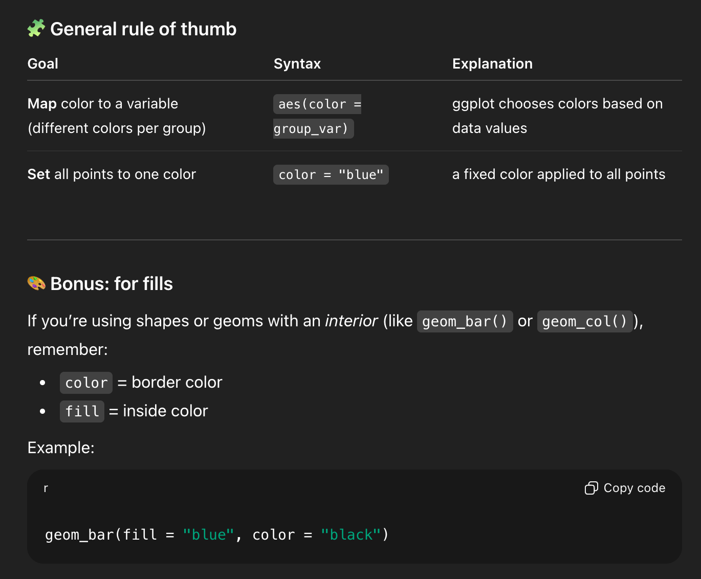
This one is cool because you can’t find that exact information anywhere in the documentation. It’s a more complex situation, but the LLM figured out the different moving parts and used all that information to confidently stumble into the right answer.
Now for one that’s more complex and subtly wrong/misleading.
Some context first.
When you use group_by() and summarize() on two groups, R will stop grouping by the last one and leave the others after it’s done summarizing. That’s why you’ve seen messages like this all semester:
'summarise()' has grouped output by 'Gender'. You can
override using the '.groups' argumentIt’s generally nothing to worry about (unless you’re using mutate() later and doing things like calculating proportions, like you did in Exercise 4).
If you ask ChatGPT for code to calculate the average city MPG for cars by class in the mpg dataset, it will happily do it, and it’ll generate something like this:
# Load the required libraries
library(dplyr)
library(ggplot2)
# Calculate the average value of cty by class
average_cty_by_class <- mpg |>
group_by(class) |>
summarize(average_cty = mean(cty, na.rm = TRUE), .groups = "drop")
# Show the results
print(average_cty_by_class)And that code will run, and it is actually correct.
BUT it’s doing some weird roundabout things. First, print(average_cty_by_class) is unnecessary. If you just run the name of the object by itself like average_cty_by_class, it’ll print. The explicit print() function is redundant (and a good sign that this was created by ChatGPT).
The bigger issue, though is the summarize() function that it generated. It’s doing two weird things:
- It includes
.groups = "drop"and, - It includes
na.rm = TRUE
Neither of those are necessary, since
- You only have one group (
class) and it automatically gets dropped aftersummarize(), and - There are no missing values in
ctyand general best practice (for me, at least) is to not enablena.rm = TRUEeverywhere all the time.
BUT that code is technically not wrong, and it is a useful reminder of how group_by() |> summarize() works.1
1 But as a beginner, you don’t know that.
Don’t just copy/paste that code and hope it works and submit your assignment. Let’s use the LLM as a way to interact with the documentation.
I asked ChatGPT this:
I’m using R and tidyverse to calculate the average of a column across a group from another column. I have code that looks like this:
```
mpg |>
group_by(class) |>
summarize(average_cty = mean(cty, na.rm = TRUE), .groups = “drop”)
```but I’m not sure what na.rm means here, or what .groups = “drop” means here. Can you explain it?
And it generated a big long answer. First, it made some explanations:
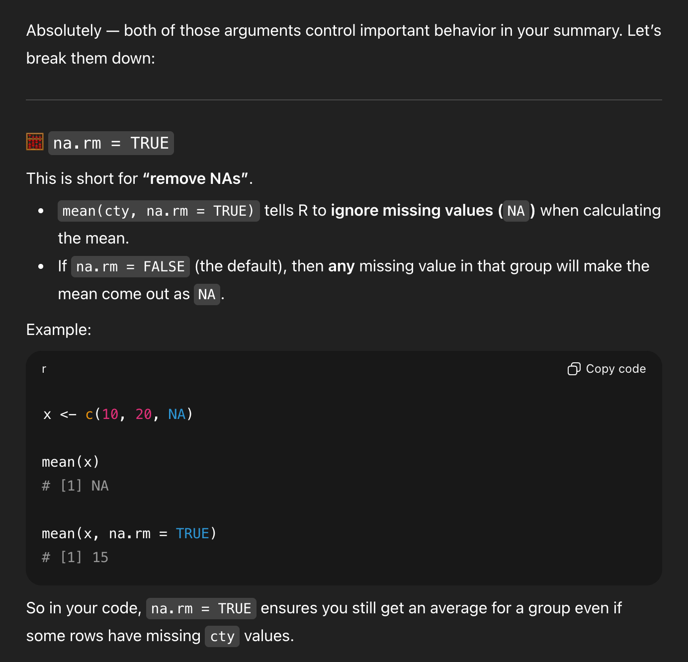

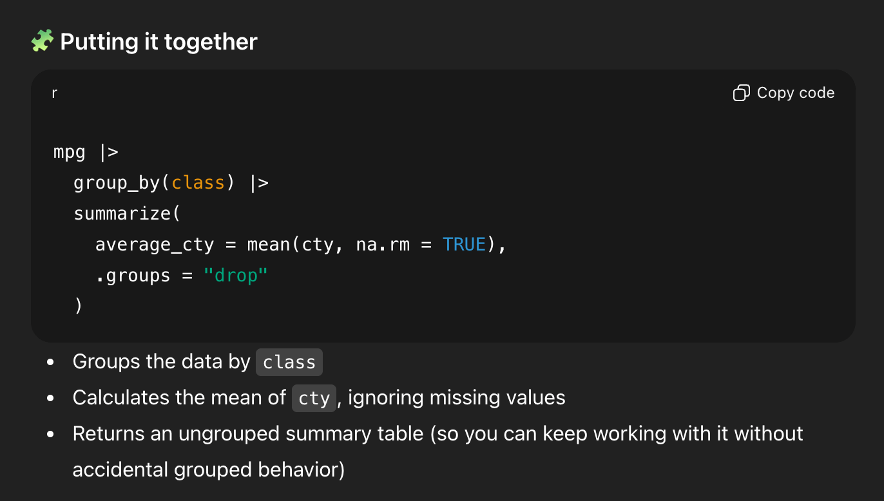
That’s all generally correct.
But it’s missing some detail. We’re only grouping by one thing, so R will automatically drop the last (and only) group and return an ungrouped data frame. So I asked a follow-up question:
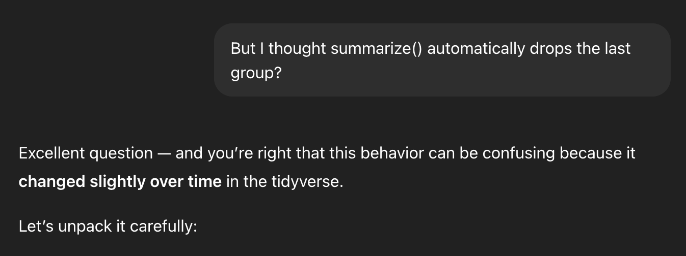
It shows an example with two groups (NOTICE THE FAKE DATA HERE! It makes up values of 1, 2, 3, and 4 for Japan, China, France, and Germany, and THAT’S TOTALLY FINE because this is just an illustration!), and it shows the leftover continent grouping:
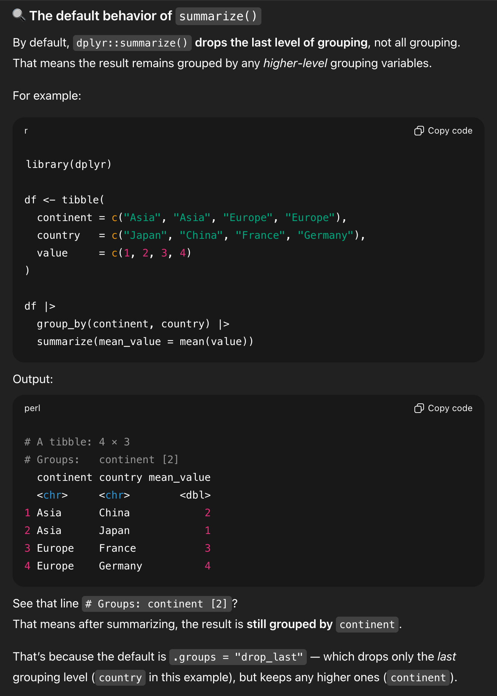
It then shows what that data looks like if you drop the groups:
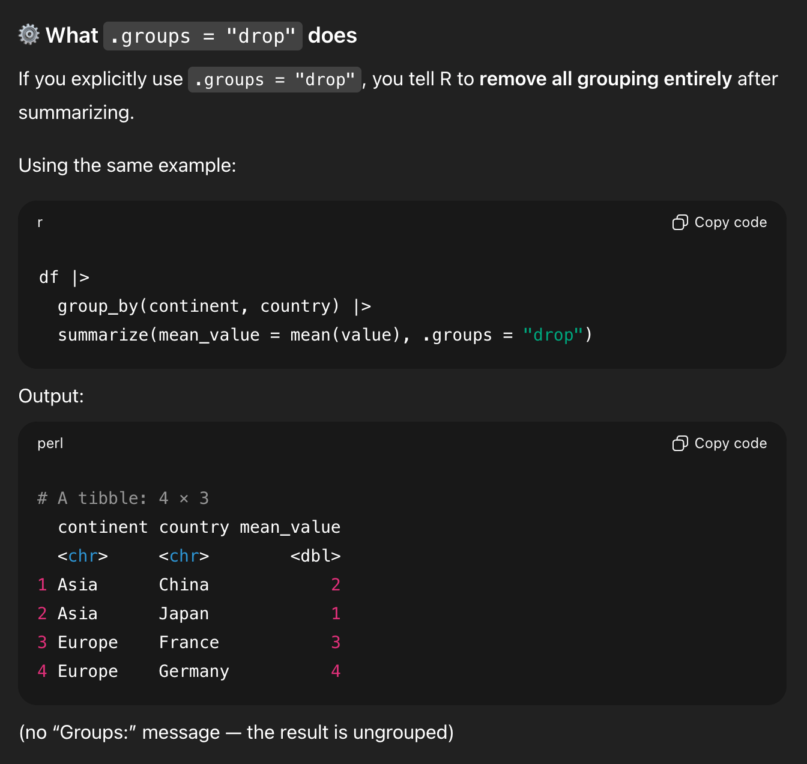
That’s all good. It then shows my original question with one group:
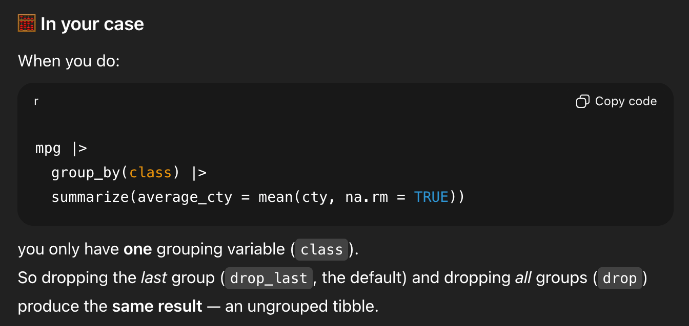
And—here’s the wild part—it concludes by saying that .groups = "drop" isn’t necessary.
In the middle of generating all that explanation, it forgot that it had started out trying to show me that .groups = "drop" was important, and it ended its explanation by saying that it’s not actually needed.
That’s what I mean when I say that it’s a forgetful and unreliable resource. Lots of that code is helpful as an illustration of what’s going on. Lots of the explanation is good and fine. But it subtly changed its mind halfway through and didn’t realize it (because it can’t realize it! it’s just a chain of statistically likely text!)
Even if you use them to help you learn, they can teach you the wrong things
Hopefully you can see where this is dangerous for learning. It can often “teach” you wrong, and you can only recognize that if you know stuff already.
It’s extra dangerous if you then take that example output, paste it into your exercise, and submit it.
I’m not even concerned about the plagiarism aspect of that—code is code and there are only a few ways to write {dplyr} code that will do this, and it’s easy to adapt from real human-based examples online, so I’m less worried about stealing other people’s work here.
I’m concerned that it’s not real data.
It made up values of 1, 2, 3, and 4 for some countries to illustrate grouping and summarizing. That’s good and normal.
None of that is real. Don’t treat it as real.